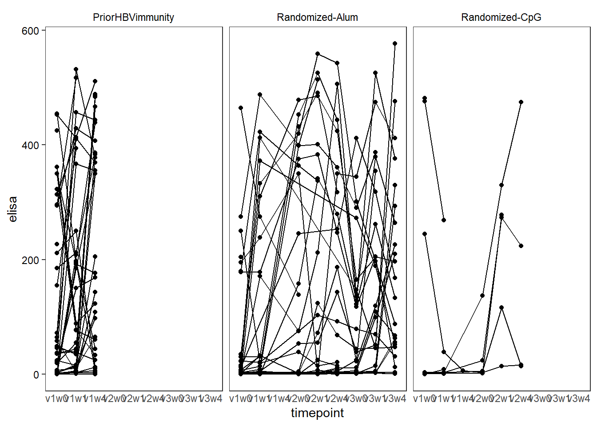
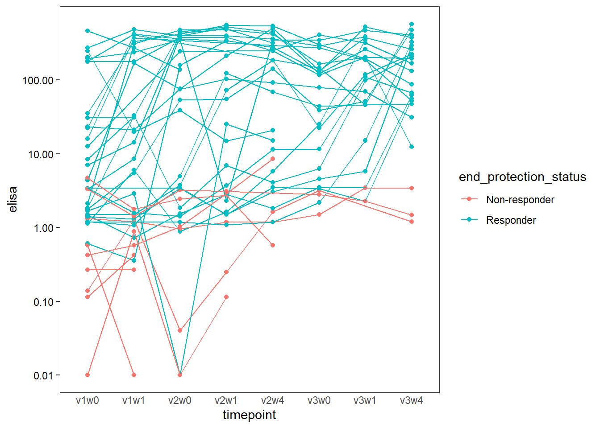
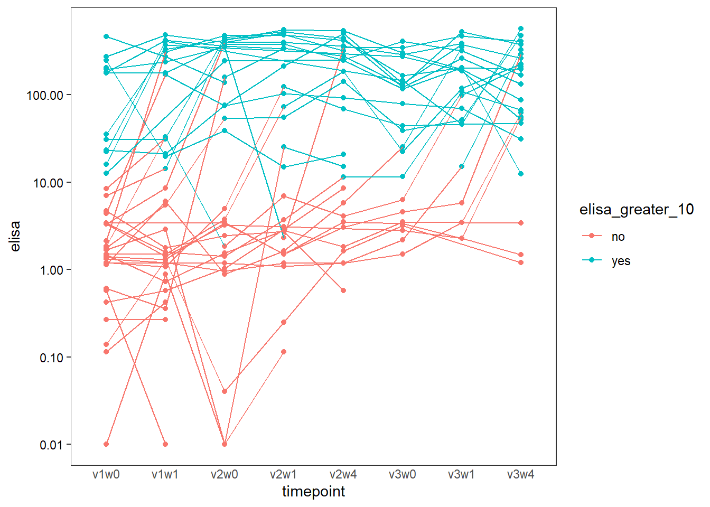
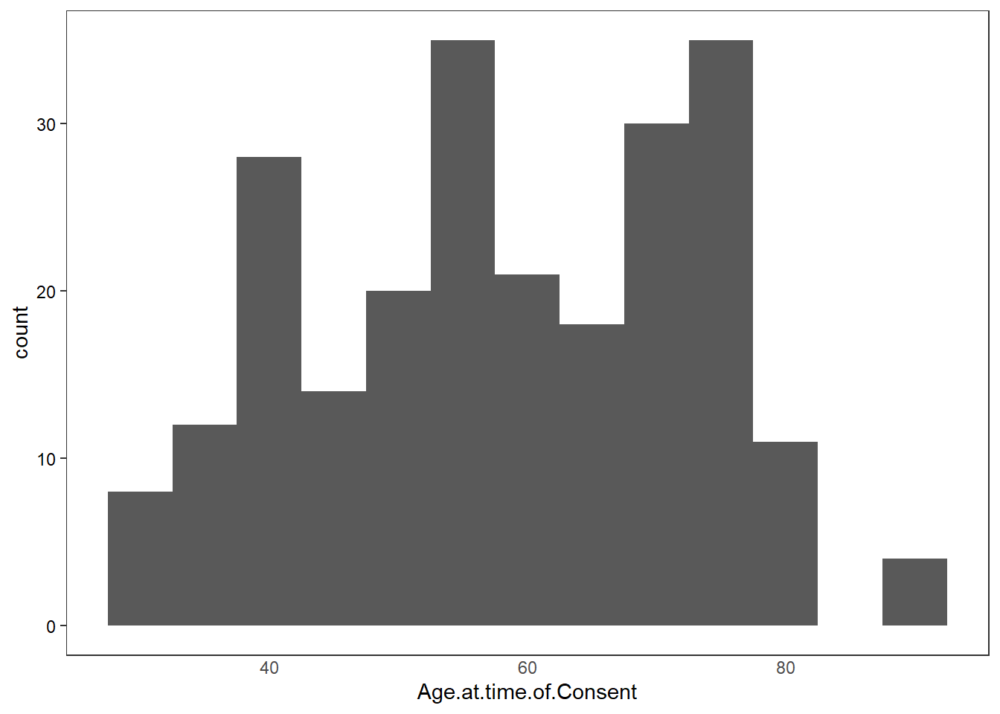

This document details the process of cleaning, preparing, and analyzing humoral data related to HBV vaccination. The analysis involves several steps, including data import, merging of different batches, handling of duplicates, and integration of metadata. The primary goal is to explore the antibody responses over time, particularly in different age groups and vaccine types.
Load libraries
— Load Data —
# Data from multiple batches are loaded from different files.b0 <-read_xlsx("./data/elisa_output.xlsx")part_merge <-read_xlsx("./data/traditional_elisa_merged_batch_cmrs_rs.batch1.xlsx")b2 <-read_csv("./data/20240802_hbv_elisa_batch2_riddhimaa.csv")
Rows: 38 Columns: 4
── Column specification ────────────────────────────────────────────────────────
Delimiter: ","
chr (1): SAMPLE
dbl (2): ABS, [ ]
lgl (1): notes
ℹ Use `spec()` to retrieve the full column specification for this data.
ℹ Specify the column types or set `show_col_types = FALSE` to quiet this message.
Rows: 41 Columns: 4
── Column specification ────────────────────────────────────────────────────────
Delimiter: ","
chr (1): SAMPLE
dbl (2): ABS, [ ]
lgl (1): notes
ℹ Use `spec()` to retrieve the full column specification for this data.
ℹ Specify the column types or set `show_col_types = FALSE` to quiet this message.
Rows: 65 Columns: 4
── Column specification ────────────────────────────────────────────────────────
Delimiter: ","
chr (2): SAMPLE, notes
dbl (2): ABS, [ ]
ℹ Use `spec()` to retrieve the full column specification for this data.
ℹ Specify the column types or set `show_col_types = FALSE` to quiet this message.
Rows: 81 Columns: 6
── Column specification ────────────────────────────────────────────────────────
Delimiter: ","
chr (3): A, B, C
dbl (1): mIU
lgl (2): E, F
ℹ Use `spec()` to retrieve the full column specification for this data.
ℹ Specify the column types or set `show_col_types = FALSE` to quiet this message.
# --- Format Each Batch ---# Each batch is formatted to have consistent column names and data types.# This involves extracting subject IDs, timepoints, and ELISA values from different column structures.# Batch 2b2$timepoint <-tolower(substr(b2$SAMPLE, 1, 4))b2$subject <-paste0("00", substr(b2$SAMPLE, 6,7))b2$elisa <- b2$`[ ]`b2$collected_by <-"RS"b2$experiment <-as.character("20240802")# Batch 3b3$timepoint <-tolower(substr(b3$SAMPLE, 4, 7))b3$subject <-paste0("00", substr(b3$SAMPLE, 1,2))b3$elisa <- b3$`[ ]`b3$collected_by <-"RS"b3$experiment <-as.character("20241112")# Batch 4b4$timepoint <-tolower(substr(b4$SAMPLE, 4, 7))b4$subject <-paste0("00", substr(b4$SAMPLE, 1,2))b4$elisa <- b4$`[ ]`b4$collected_by <-"RS"b4$experiment <-as.character("20250402")# Batch 5b5$timepoint <-tolower(b5$B)b5$subject <-substr(b5$A, 10,13)b5$elisa <- b5$mIUb5$collected_by <-"RS"b5$experiment <-as.character("20250620")# Batch 0 (unlabeled)b0$timepoint <-paste0("v", substr(b0$`Event Name`, 7, 7), "w", substr(b0$`Event Name`, 16, 16))b0$subject <-substr(b0$`Participant ID`, 6, 9)b0$experiment <-"??"b0$collected_by <-"??"b0$elisa <- b0$`ELISA Value`b0$note <-ifelse(!is.na(b0$`ELISA Value Issue`),paste0(b0$`ELISA Value Issue`, "_elisa_value_issue"),NA)# --- Merge All Batches ---# The formatted batches are merged into a single dataframe.colnames(part_merge)
[1] NA NA NA
[4] NA NA NA
[7] NA "yes_elisa_value_issue" NA
[10] "yes_elisa_value_issue" NA NA
[13] NA NA "yes_elisa_value_issue"
[16] NA NA NA
[19] NA NA NA
[22] NA "yes_elisa_value_issue" NA
[25] "yes_elisa_value_issue" "yes_elisa_value_issue" "yes_elisa_value_issue"
[28] "yes_elisa_value_issue" "yes_elisa_value_issue" NA
[31] "yes_elisa_value_issue" NA NA
[34] "yes_elisa_value_issue" NA "yes_elisa_value_issue"
[37] NA NA NA
[40] NA NA NA
[43] NA NA NA
[46] NA NA NA
[49] NA NA NA
[52] NA NA NA
[55] NA NA NA
[58] NA NA "yes_elisa_value_issue"
[61] NA NA NA
[64] NA NA "yes_elisa_value_issue"
[67] "yes_elisa_value_issue" "yes_elisa_value_issue" NA
[70] NA NA NA
[73] NA NA NA
[76] NA NA NA
[79] NA NA NA
[82] NA NA NA
[85] NA NA NA
[88] NA "yes_elisa_value_issue" NA
[91] NA NA NA
[94] NA NA NA
[97] NA "yes_elisa_value_issue" NA
[100] NA NA NA
[103] NA NA "yes_elisa_value_issue"
[106] NA NA NA
[109] NA NA NA
[112] NA NA NA
[115] "yes_elisa_value_issue" NA NA
[118] NA NA NA
[121] NA NA NA
[124] NA NA NA
[127] NA NA NA
[130] NA "yes_elisa_value_issue" NA
[133] NA NA NA
[136] NA NA NA
[139] "yes_elisa_value_issue" "yes_elisa_value_issue" NA
[142] "yes_elisa_value_issue" "yes_elisa_value_issue" NA
[145] NA NA NA
[148] NA NA NA
[151] NA NA NA
[154] NA NA NA
[157] "yes_elisa_value_issue" "yes_elisa_value_issue" "yes_elisa_value_issue"
[160] NA NA "yes_elisa_value_issue"
[163] "yes_elisa_value_issue" "yes_elisa_value_issue" NA
[166] NA NA NA
[169] NA NA NA
[172] NA "yes_elisa_value_issue" "yes_elisa_value_issue"
[175] "yes_elisa_value_issue" NA NA
[178] NA NA NA
[181] NA NA NA
[184] NA NA NA
[187] NA NA NA
[190] NA NA NA
[193] NA NA NA
[196] "yes_elisa_value_issue" NA NA
[199] NA NA NA
[202] NA NA NA
[205] NA NA NA
[208] NA NA NA
[211] NA NA NA
[214] NA NA NA
[217] NA NA NA
[220] NA NA NA
[223] NA "yes_elisa_value_issue" NA
[226] NA NA NA
[229] NA NA NA
[232] NA NA
# --- Load and Process REDCap Metadata ---rs.redcap <-read.csv("./data/202506_redcap_meta.csv")rs.redcap$subject <-substr(rs.redcap$Participant.ID, 6, 9)rs.redcap <- rs.redcap %>%filter(!grepl("optional", Event.Name, ignore.case =TRUE))rs.redcap$timepoint <-paste0("v", substr(rs.redcap$Event.Name, 7,7), "w", substr(rs.redcap$Event.Name, 16,16))rs.redcap$elisa <- rs.redcap$ELISA.Value# The following commented out code was likely used for initial data validation,# checking for overlaps between the ELISA data and the REDCap metadata.# overlap <- df %>%# semi_join(rs.redcap, by = c("subject", "timepoint", "elisa"))rs.redcap$note <-"other"rs.redcap$experiment <-NArs.redcap$collected_by <-NA# Anti-join to find non-matched rows, expecting none.not_matched <- rs.redcap %>%anti_join(rs.redcap, by =c("subject", "timepoint", "elisa"))not_matched
# Plot all data points to visually inspect for duplicates and other issues.df %>%ggplot(aes(x = timepoint, y = elisa)) +geom_point(aes(color = note)) +geom_line(aes(group = subject)) + ct2 +facet_wrap(~ subject)
`geom_line()`: Each group consists of only one observation.
ℹ Do you need to adjust the group aesthetic?
`geom_line()`: Each group consists of only one observation.
ℹ Do you need to adjust the group aesthetic?
`geom_line()`: Each group consists of only one observation.
ℹ Do you need to adjust the group aesthetic?
`geom_line()`: Each group consists of only one observation.
ℹ Do you need to adjust the group aesthetic?
# Remove any remaining duplicates after merging metadata.df <- temp %>%distinct(subject, timepoint, .keep_all =TRUE)# Create a binary variable for lymph node biopsy.df[, lnbx:=ifelse(subject %in%c("0022","0029","0033","0036","0041","0043","0058","0069","0076","0063"), "yes", "no")]
Warning in `[.data.table`(df, , `:=`(lnbx, ifelse(subject %in% c("0022", : A
shallow copy of this data.table was taken so that := can add or remove 1
columns by reference. At an earlier point, this data.table was copied by R (or
was created manually using structure() or similar). Avoid names<- and attr<-
which in R currently (and oddly) may copy the whole data.table. Use set* syntax
instead to avoid copying: ?set, ?setnames and ?setattr. It's also not unusual
for data.table-agnostic packages to produce tables affected by this issue. If
this message doesn't help, please report your use case to the data.table issue
tracker so the root cause can be fixed or this message improved.
# Create a binary variable for ELISA > 10.df[, `elisa_greater_10`:=ifelse(elisa >10, "yes", "no")]# Define protection status based on ELISA levels at a specific timepoint.# if any elisa value for a given individual is >10 then classify as "Responder"df[, end_protection_status :=ifelse(any(elisa >10, na.rm =TRUE), "Responder", "Non-responder"), by = .(subject)]df$DateEnrolled <-as.Date(df$DateEnrolled, format="%m/%d/%Y")df$HBsAb1date <-as.Date(df$HBsAb1date, format="%m/%d/%Y")df$HBcAbdate <-as.Date(df$HBcAbdate, format="%m/%d/%Y")df[, CurrentMeds.list :=strsplit(CurrentMeds, split =";")]df[, PastHistory.list :=strsplit(PastHistory, split =";")]df$CurrentMeds <-NULL; df$PastHistory <-NULL# Clean up the environment.rm(df.merge,temp, meta, meta2, df.clean)
# Save the final merged data with metadata.fwrite(df, "./outs/20250828_hbv_merged_elisa_final_with_meta.csv")saveRDS(df, "./outs/20250828_hbv_merged_elisa_final_with_meta.rds")
— Organize and Derive New Variables —
# This section creates new variables for analysis and visualization.table(df$Cohort)
# Plot ELISA values over time for each group.ggplot(df, aes(y = elisa, x = timepoint, group=subject)) +geom_line() +geom_point() + ct2 +facet_wrap(~Cohort)

# Visualize protection status over time for the Alum group.ggplot(df[ Cohort =="Randomized-Alum"], aes(x = timepoint, y = elisa)) +geom_point(aes(group = subject, color = end_protection_status)) +geom_line(aes(color = end_protection_status, group = subject)) +ct2 +scale_y_log10(labels = scales::label_number())

# Visualize ELISA > 10 status over time for the Alum group.ggplot(df[ Cohort =="Randomized-Alum"], aes(x = timepoint, y = elisa)) +geom_point(aes(group = subject, color = elisa_greater_10)) +geom_line(aes(color = elisa_greater_10, group = subject)) +ct2 +scale_y_log10(labels = scales::label_number())

# The following lines are for exploring the age variable.ggplot(unique(df, by='subject'), aes(y = Age.at.time.of.Consent, x=Cohort)) +geom_boxplot(color='grey80', alpha=0.5) +geom_beeswarm() + ct2

# Visualize age distribution by group.
Check for missing age data for a specific subject.
#0015 missing one age point df %>% filter(subject == “0015”) %>% pull(age)
Calculate mean and standard deviation of age for each group.
fit <- lmer(log(elisa) ~ timepoint * age_group + (1|subject), data = df.alum) aov_tab <- anova(fit) pval <- signif(aov_tab[“timepoint:age_group”, “Pr(>F)”], 3) pval summary(fit) # The following commented out code shows how to get p-values using Kenward-Roger’s approximation. #anova(fit, ddf = “Kenward-Roger”)